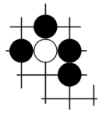
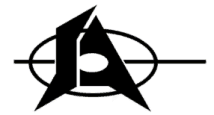

The name Atari
actually comes from Japan. And yet the company was
most definitely American. Ever wondered why? Its an
interesting story, one worth explaining...
In
1972, three friends decided to invent and market the worlds first
commercially feasible video game. They were Nolan Bushnell, Ted
Dabney and Larry Bryan. To become a partner each man had to
submit a $100 to start the project - a remarkably small sum when you
consider the company's success. The next step was to find a
name!
Drinking
beer and thumbing through the dictionary one day, the three friends
came across an interesting entry under "S". The word
was Syzygy, or "the straight-line configuration between three
celestial bodies". What a perfect name, they thought, for
three astronomically talented people!

Now
they could get on with the business of inventing games, their first,
Computer Space, was produced and all was going well. But things
began to become a little shaky, and Larry Bryan decided not to ante up
his $100 and pulled out, leaving Bushnell and Dabney to go it alone.
They
set up a shop in Santa Clara, California, and incorporated the
business. A little later, with the help of Al Alcorn, they
invented Pong®
Bushnell
and Dabney applied for the name Syzygy to the office of the California
Secretary of State, which regulates California Corporations, but were
told they were too late. The name was already taken.
Following unsuccessful attempts to buy the rights of the name from the
first Syzygy corporation, which appeared to be inactive, the friends'
solicitor pressed them to think up an alternative.
This
proved difficult. The names BD Inc. and DB Inc. were tested then
rejected in turn; the first bore too close a resemblance to Black and
Decker, and the second to Dunn and Bradstreet. Inspiration occurred
at last, once again in an informal atmosphere. Bushnell and
Dabney were both keen players of Go, a Japanese strategy game, and
their best brainstorming always occurred over a good game and a bottle
of beer.
This
time they decided to make a list of several Go words to see if one of
them would fly as the new corporate name. First choice was
"Sente", which means "the upper hand" - something
that greatly appealed. Second and third choices were
"Atari" which has a similar meaning to the English
"Check", and "Hanne", an acknowledgement of an
overtaking move. Bushnell and Dabney submitted the list once
again to the Office of the Secretary of State, which approved
"Atari", and the rest is history.

When the company name
changed, Bushnell and Dabney decided to update the logo too.
They incorporated the "S" from Syzygy and the "A" from Atari into the
new design, and if you look at the logo above, you can see both
letters.
George Opperman (who worked for Atari) designed the
original "Fuji" logo in 1972, but it was
not until later, as the company became increasingly successful, that
an advertising agency redesigned it into a slicker, and now famous
Atari logo - the "Fuji" or Stylised "A" design.
|